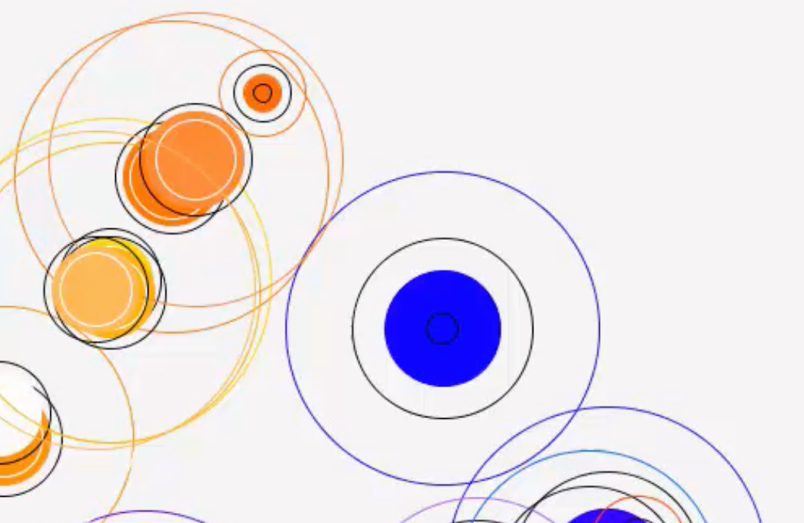
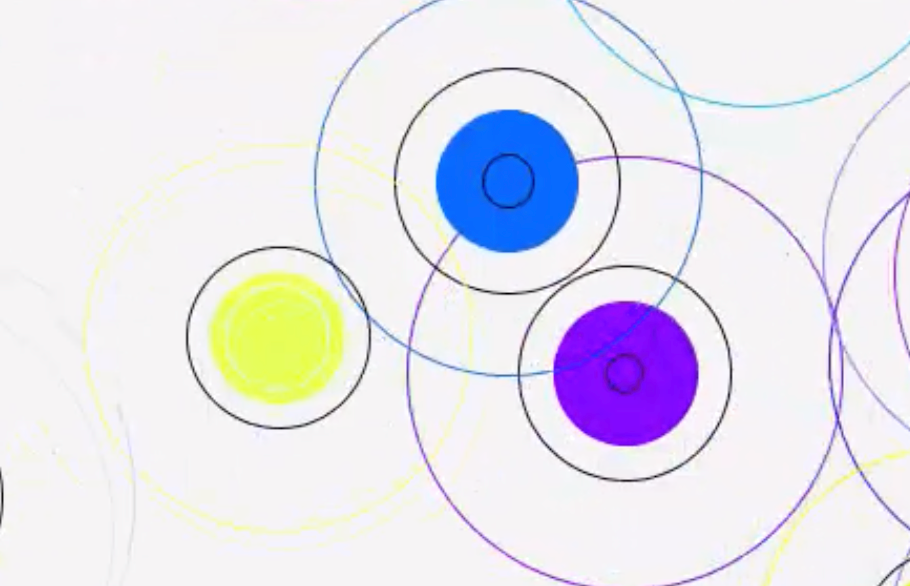
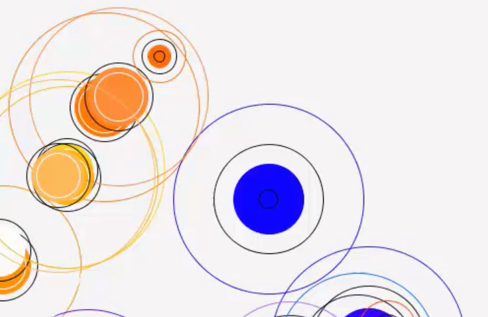
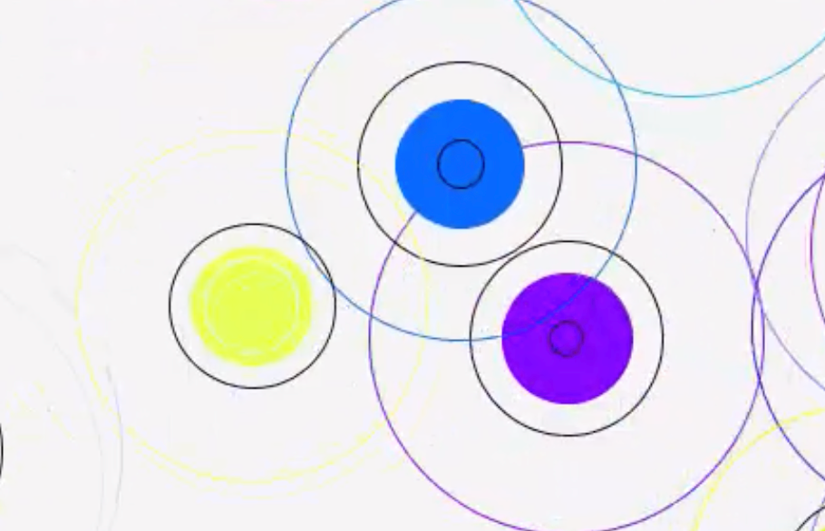
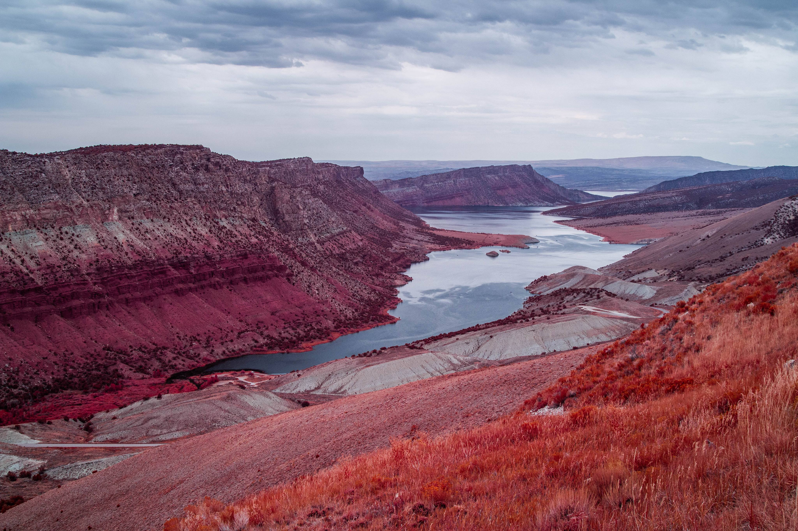
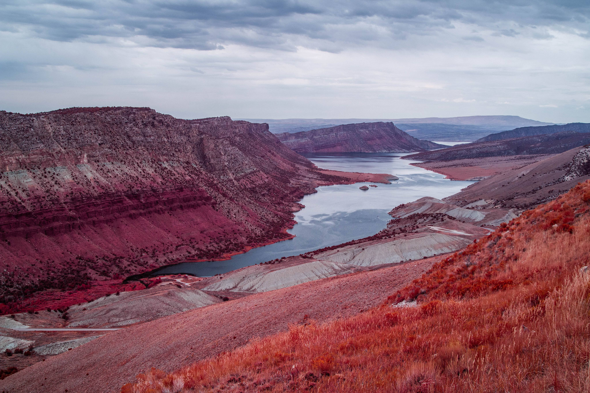
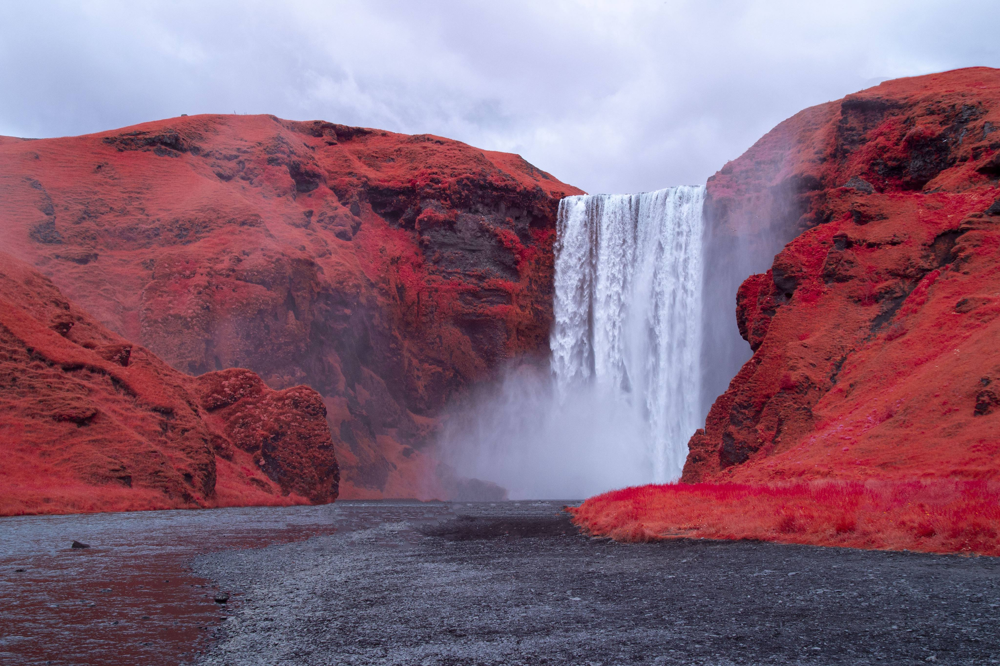
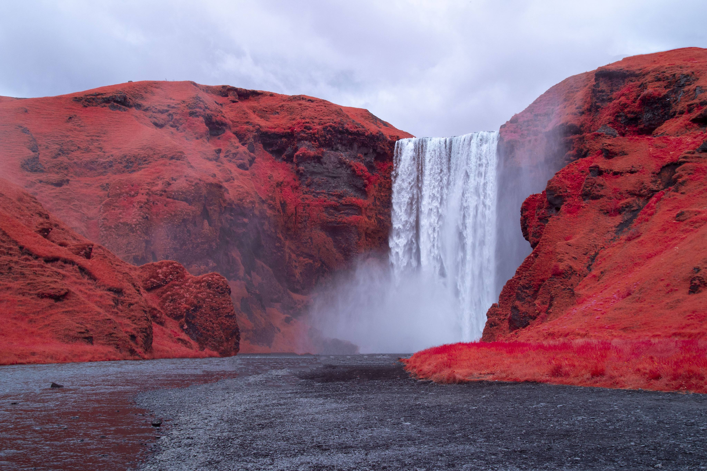

Cellule 5791
2021
- Projet de diplôme DSAA DCN
- Avec Alice Gioia et Pierre Bourdon
- Jeu à réalité intégrée
- UX-UI & Installation
- Contrôle d'un Physarum Polycephalum
Citadelle [Cellule 5791] est un jeu à réalité intégrée (ARG). Par l’intermédiaire de votre boîte mail, vous rejoignez les rangs d’une corporation mystérieuse qui vous donne accès à son intranet, l’interface d’échange de ses employés, contenant un grand nombre de secrets. À travers cette fiction qui brouille les frontières du réel, vous vous retrouverez responsable d’un incubateur contenant un être vivant qu’il s’agira de garder en vie.


Cet être vivant dont vous êtes responsable n’est autre qu’un Physarum Polycephalum. Plus couramment appelé «blob», il s’agit d’ une espèce unicellulaire de myxomycète de l’ordre des Physarales, vivant dans les milieux frais et humides tels que les tapis de feuilles mortes des forêts ou le bois mort. Découvert il a environ 200 ans, il est aujourd’hui étudié pour ses capacité d’apprentissage, d’anticipation et de résolution de labyrinthe. Chez Citadelle, nous cultivons des blobs depuis presque un an et nous souhaitions transmettre l’affection toute particulière que nous portons à cet organisme, à travers une rencontre.
Un alternate reality game, ou jeu à réalité intégrée, est « un récit interactif en ligne qui met à profit le monde réel comme une plate-forme et utilise une narration transmédia pour livrer une histoire qui peut être modifiée par les idées ou les actions des joueurs ». En d’autres termes, il s’agit d’un jeu à double ancrage : une partie du jeu prend place numériquement, à travers une interface web par exemple. Parallèlement, certains évènements se déroulent dans la réalité, dans l’espace physique. On peut ainsi avoir recours à l’utilisation de coordon-nées géographiques et demander au joueur de se rendre à une certaine localisation pour y trouver un objet par exemple.

L’intranet de Citadelle permet au joueur d’accéder à toutes les ressources de la société. Du règlement intérieur à l’organigramme, il peut ainsi mener l’enquête, découvrir progressivement l’être vivant dont il devra s’occuper et prendre en main les commandes de l’incubateur pour le faire. Un espace de messagerie lui permet également d’échanger avec un certain M15381 des ressources humaines, tout comme recevoir des mails de la part de Citadelle ou de l’incubateur.


L’incubateur constitue la partie tangible du jeu, son implémentation dans le monde réel. Cette structure recouverte de capteurs et de caméras contient Physarum Polycephalum. Ce sont ces capteurs que le joueur contrôlera progressivement via l’intranet, à distance, dans le but de garder le blob en vie. Il les débloquera progressivement à travers la narration et l’exploration de l’interface.

Lorsque le joueur a débloqué tous les capteurs et caméras entourant le blob, il lui est proposé de le rencontrer en lui communiquant l’emplacement de l’incubateur. Il quitte ainsi l’interface web et se rend physiquement sur place. Ainsi apparaissent 3 possibilités : - Le blob est vivant et le joueur décide de l’emporter chez lui. - Le blob est vivant et le joueur décide de le relâcher dans la nature. - Le blob est mort.

Avec cette expérience, Citadelle a maintenant pour ambition de trouver des partenaires qui participeraient à la concrétisation de [Cellule 5791]. Nous souhaitons en effet ancrer ce projet dans une dynamique de médiation arts-sciences, ainsi que le développer sur certains aspects plus sensibles comme la narration ou encore la communication. Ainsi pourraient être (re)contactés Éric Viennot, Audrey Dussutour, Anne-Lyse Renon, Nicolas Rodelet, ou encore Steam !

 





 

 
